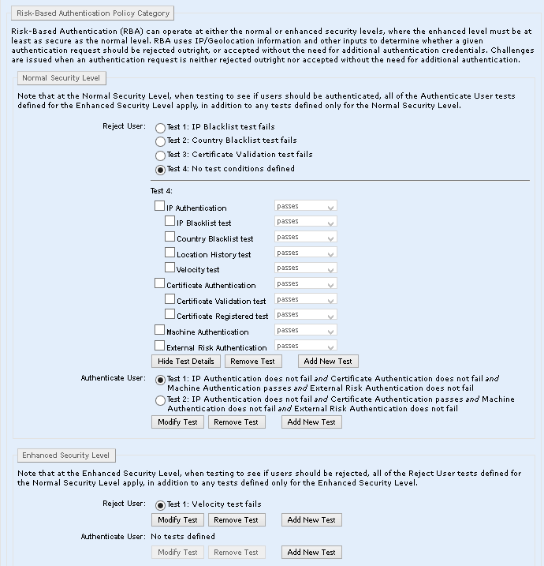
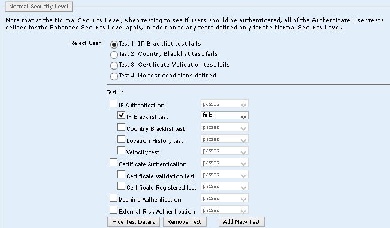

|
IdentityGuard Server 13.0 Administration Guide |
|
IdentityGuard Server 13.0 Administration Guide |
When you set the normal and enhanced RBA policies, you are setting the risk-based tests to run, and how the test results are interpreted.
There are four possible results for each test:
● test passes: test is run and passes
● test fails: test is run and does not pass
● test does not fail: either the test is not run (usually because data required for the test was not provided) or the test is run and it passes
● test does not pass: either the test is not run (usually because data required for the test was not provided) or the test is run and it fails
The results of the combinations of tests you set determines whether the user is authenticated, challenged using another authentication type, or rejected. You can set these tests results to:
● Authenticate the user if one or more tests pass.
● Challenge the user, even if all RBA tests pass.
● Reject the user if any test fails, if a specific tests fails, or if a specific combination of tests fail.
 Explanation
of how the policy works
Explanation
of how the policy works
You can set risk-based authentication policies using the Administration interface as shown in this section, or you can set them using Master user shell commands. See Setting RBA policies in the Master user shell.
To change the risk-based authentication policy for Normal and Enhanced security levels
1. Locate the policy to edit. See View the risk-based authentication policy.
2. On the View Policy page, click Edit Policy.
An editable version of the settings appear. There are two policies, Reject User and Authenticate User, for the Normal Security Level and two corresponding polices for the Enhanced Security Level.

3. Define the Reject User policy for the Normal Security Level. Do one of the following:
● Select a test expression from the list. Choose one of Test 1, Test 2, Test 3, or Test 4. Click Modify Test.
● Click Add New Test.
The test expression is expanded to show the individual tests that are part of the test expression.
4. Select the individual tests you want to include in the Reject Users test expression.
5. For each test selected, make a selection from the drop-down list. The choices are passes, fails, does not pass, and does not fail. Follow these guidelines:
● If you set, for example, IP Authentication to fail, then the rule will be met if any of the four tests under IP Authentication fails.
● If you set, for example, all four of the IP authentication sub-tests individually to fail, then all of the tests must fail in order for the rule to be met.
● If you set, for example, a sub-test to fail, and this sub-test is not run during the course of Entrust IdentityGuard’s RBA processing, the test returns a null (not a fail), which causes the rule not to be met (since the test must fail in order for the rule to be met).
A sub-test might not be run based on certain preliminary IP checks. For details, see Preliminary checks and how they affect subsequent tests.
● If you want to ensure that a null result on a sub-test does not affect whether your rule is met or not, use the does not pass and does not fail options instead.

6. Repeat Step 3 to Step 5 for the Authenticate User tests in the Normal Security Level.
7. Repeat Step 3 to Step 5 for the Reject User tests in the Enhanced Security Level.
Note: The policy you set for the enhanced security level is equal to or stronger than the normal level policy. Any rejection at the normal level also causes a rejection at the enhanced level.
8. Repeat Step 3 to Step 5 for the Authenticate User tests in the Enhanced Security Level.
9. Click Save Changes.